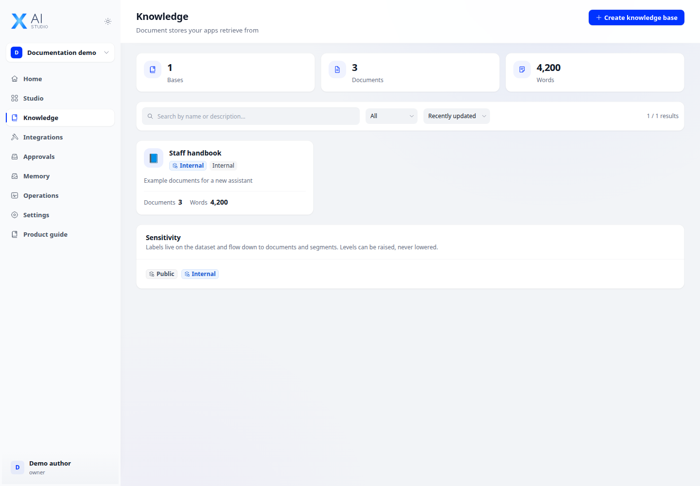
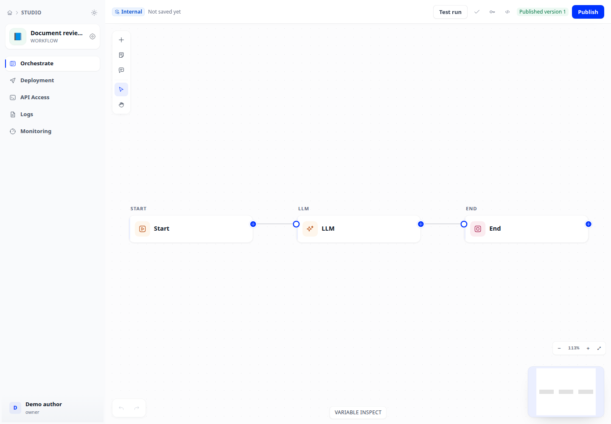

Independent ideas. Real products.
From idea.
Into reality.
I’m Duy. I build software, explore AI, and share what I learn along the way — turning ideas into things people can use.
xDev / The build space
One idea. More dimensions to explore.
On the workbench
Useful AI.
Built around your work.
From internal knowledge to working applications. AI Studio brings data, models, and tools into one workspace.
XDev AI Studio



The person behind xDev
Hi there,
I’m Duy.
I like turning an idea into something you can actually use. A tool that solves a small problem. A system that connects complex pieces. Or an application that makes AI more useful.
xDev is where I build those things — and write about what I learn in the process.
AI applicationsSystem architectureDevOps
Read my notesNotes from the work
Build.
Learn.
Share.
The things worth keeping after every experiment.
The next idea is just ahead.